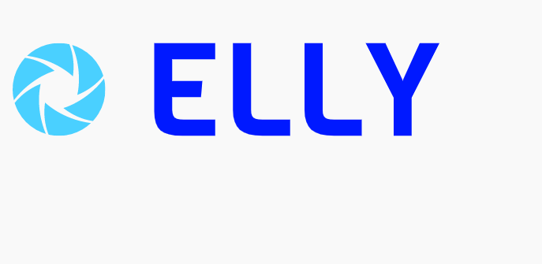

Design
Je maakt visuele ontwerpen van hoogwaardige kwaliteit met een professionele toolset.
logo ontwerp Elly
uitleg
We hebben met ons groepje ieder apart een design gemaakt voor een logo van ons "bedrijf". De naam van ons bedrijf is Elly. Het logo moet passen bij een wearable voor demente ouderen. Ik ben zelf op dit logo uitgekomen, omdat ik de kleur blauw vind passen bij technologie. Het lettertype dat ik heb gekozen vond ik mooi door de ronding die erin zit (voornamelijk bij de E en L).
Poster

Uitleg
Dit is een filmposter die ik aan het begin van het semester heb gemaakt. De bedoeling van deze opdracht was hoe je jezelf zou zien/wat je leuk lijkt om gedaan te hebben binnen 15 jaar. Het verhaal gaat over een champions league finale waarbij ik het opneem tegen onder andere Lionel Messi en Christiano Ronaldo. En waarbij er na de wedstrijd een biertje kan worden genutigd en wordt genoten van een optreden van Django Wagner.
infographic

Werkwijze
Deze infographic heb ik gemaakt voor de eerste opdracht van focus module Storytelling en Gamification.
Ik heb hier uiteindelijk verder niks mee gedaan, omdat ik toch heb besloten er niet voor te kiezen om Storytelling en Gamification af te ronden.
Zoals je hierboven kunt zien gaat het over 5 grote media-invloeden door de jaren heen.
Bij elk plaatje heb ik kort wat informatie erbij gezet.
Dit design heb ik gemaakt met Adobe Illustrator.
Wat heb ik geleerd?
Ik ben beter geworden in het gebruiken van Adobe Illustrator. In detail is dat vooral teksten positioneren, kleuren veranderen en gebruik maken van verschillende vormen.
Wat kon beter?
Om te beginnen de afbeeldingen van de apps zijn niet scherp en sommige achtergronden niet transparant. Dat had ik beter kunnen doen. Verder de bovenste balk met tekst staat niet gecentreerd en daar had ik beter naar moeten kijken.
Sprint x Design Logo's
Opdracht
Vind een onderwerp binnen het veld ICT media design. Ga onderzoek doen naar dat onderwerp en maak daar een opdracht bij. je spreekt van te voren een docent uit je semester aan die je tijdens sprint x op weg helpt en je voortgang in de gaten houdt. Het werk wat je gedaan hebt zet je uiteindelijk in je development portfolio.
wat heb ik gedaan?
Ik heb in sprint x onderzoek gedaan naar bestaande logo's van bedrijven. Welk lettertype gebruikt wordt,welke kleuren ze hebben gebruikt en waarom ze die keuzes hebben gemaakt. Ik heb zelf een aantal logo's uitgekozen die ik interessant vind. Na onderzoek te doen naar de logo's heb ik er 2 uitgekozen om verder uit te werken. Ik heb per logo een aantal ontwerpen gemaakt in adobe illustrator en daar weer de (persoonlijk) beste uitgekozen. Mijn nieuwe versie van de logo's zet ik uiteindelijk op mijn portfolio site met uitleg welke veranderingen ik heb gemaakt en waarom.